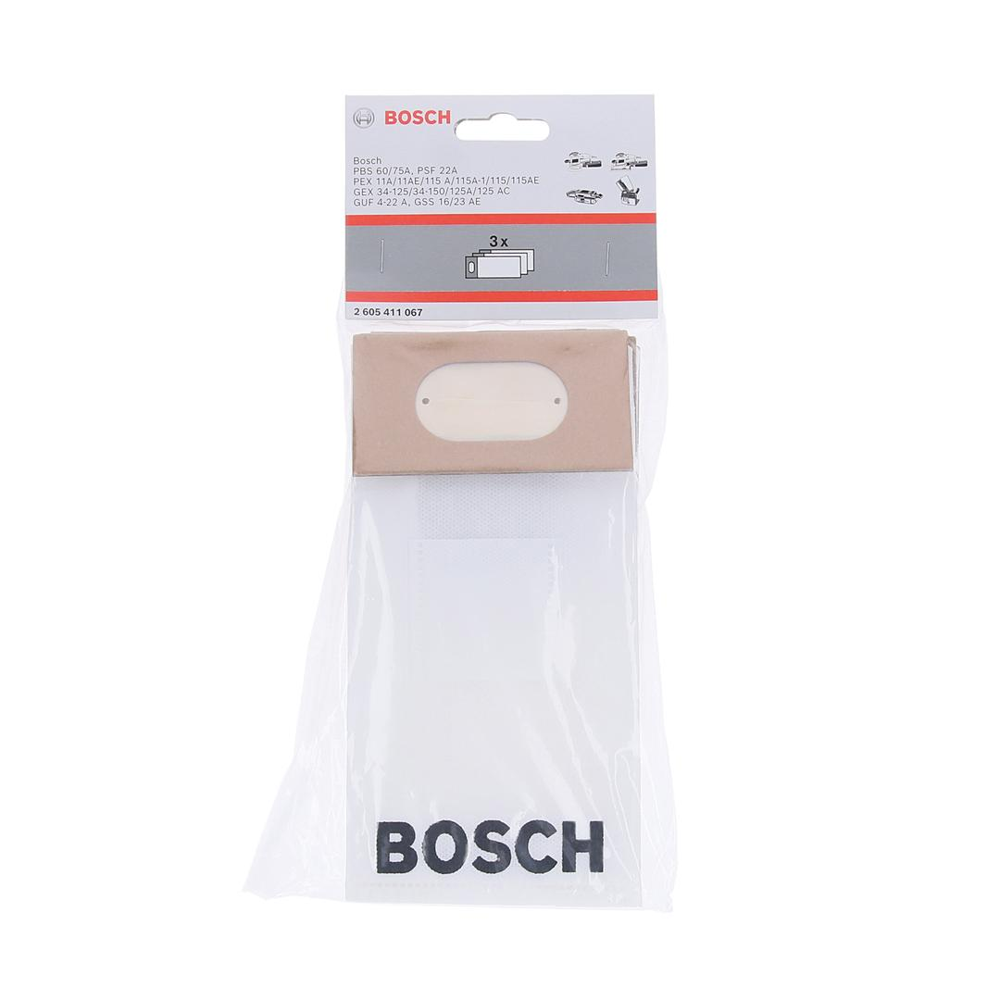
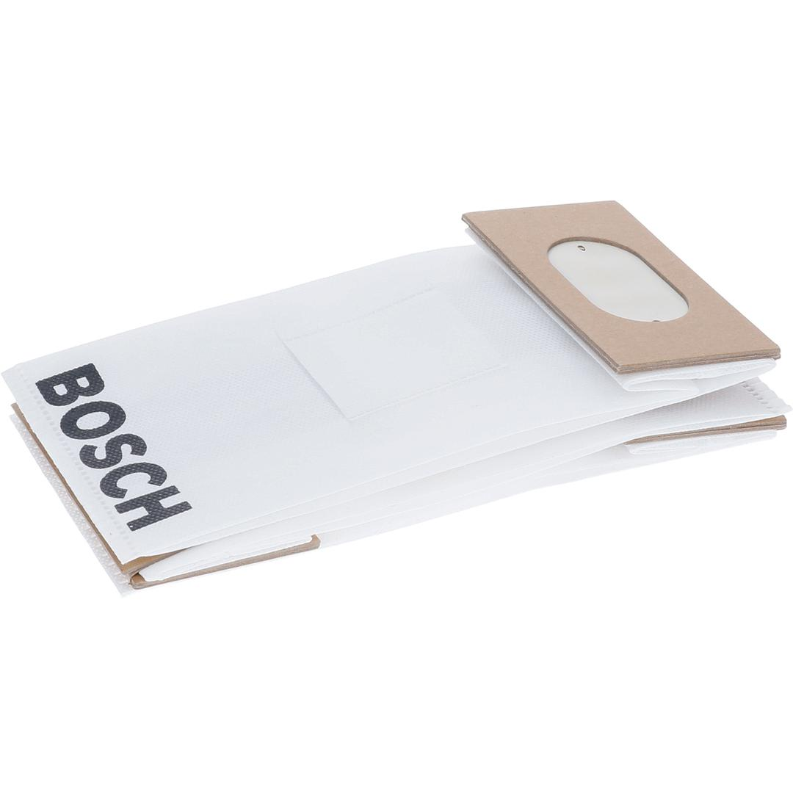

2605411067


| Specification |
for PEX 11 A/11 AE/115 A/115 A-1/115/115 AE, GEX 34-125/34-150/125A/125AC, GSS 16/23 AE, PBS 60/75 A, PSF 22 A, GUF 4-22 A |
| Suitable for |
GEX 34-125; GEX 34-150; GEX 125 AC; GSS 16; GSS 23 AE; GUF 4-22 A Professional; PBS 60; PBS 75 A; PEX 115; PEX 115 A; PEX 115 AE; PSF 22 A |
| Packaging type |
Plastic packaging, bag with tab card, with Euro hole |
| Pack quantity |
3 Pcs |
| Minimum order quantity |
1 Pcs |